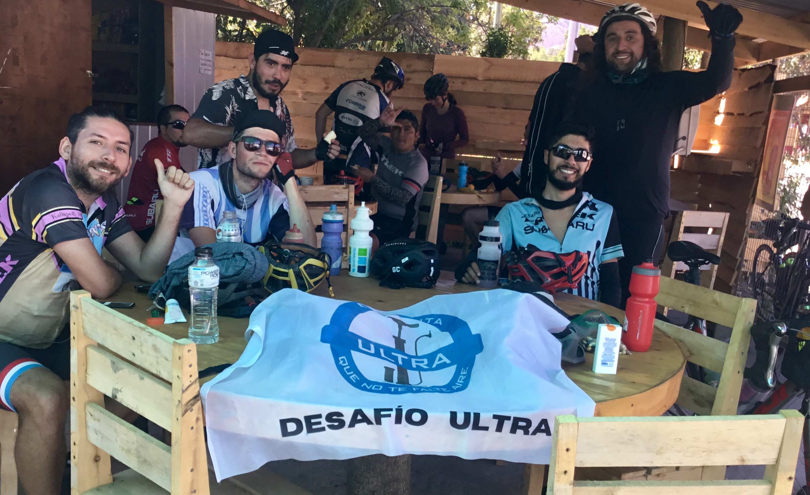
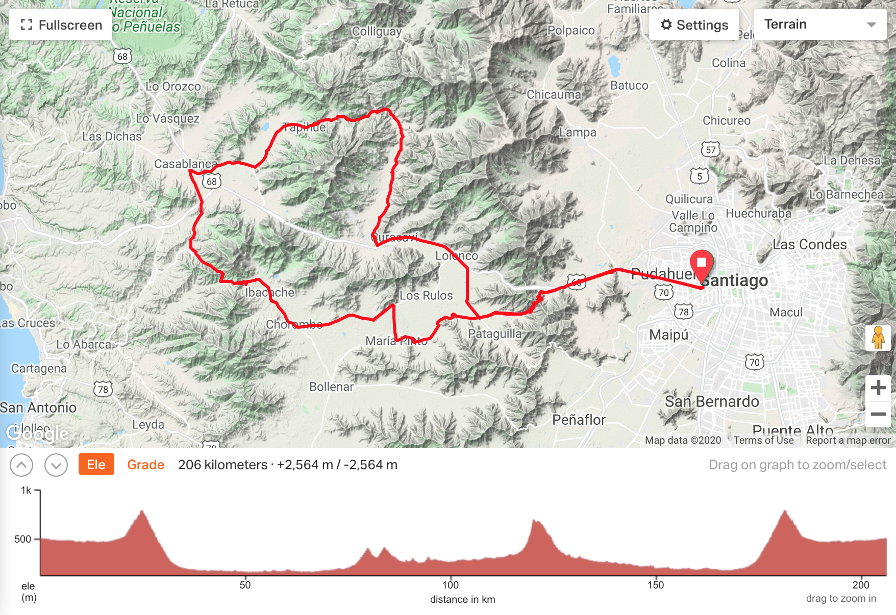
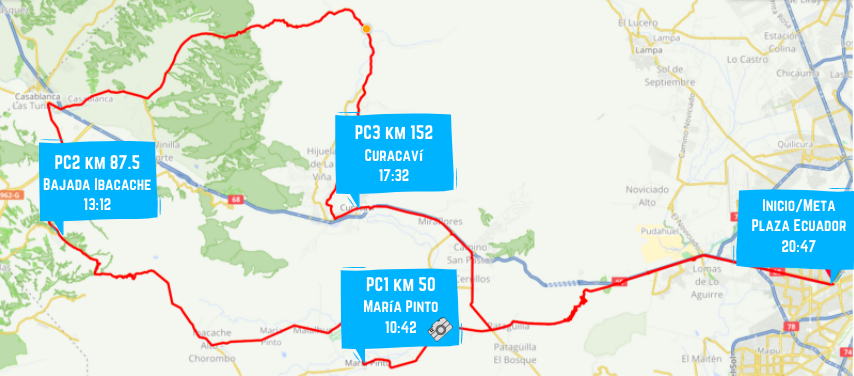
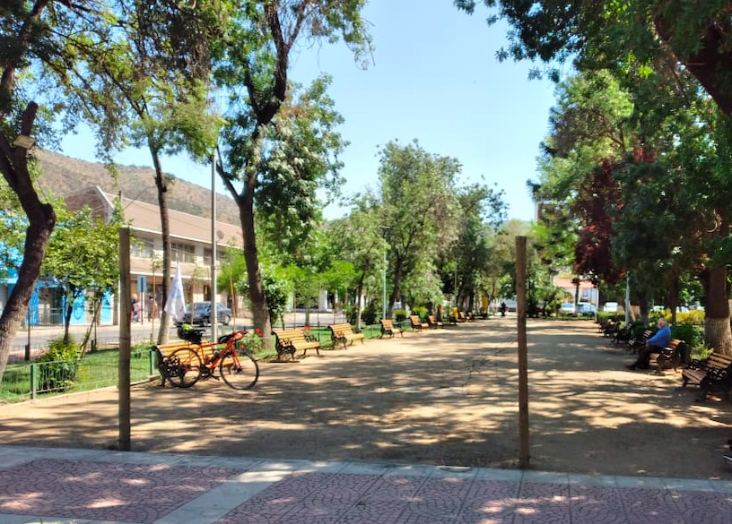

-
Desafío 200 km 3x3

Los equipos se conforman por 3 ciclistas, quienes sumarán kilómetros durante 3 horas con el fin de completar un total de 200 km entre sus 3 registros. Cada participante puede hacer una ruta distinta y sin necesidad de juntarse, si así lo prefieren. No es requisito pedalear juntos, pero el rango de 6:00 a 9:00 sí lo es. La inscripción del equipo tiene un valor de mínimo de $9.000 para costear gastos médicos de Valentina.
Ya puedes inscribir tu equipo junto a tus dos amigos/as en este link: forms.gle/eKDdQpeieoMYi8Vv7
Preguntas frecuentes
- ¿Cuánto cuesta? - Desde 9mil por equipo, pero pueden aportar más si así lo desean.
- ¿Tenemos que hacer la misma ruta los 3? - No, pueden hacer la que quieran y donde quieran, mientras sumen 200 entre los/as 3.
- ¿Cuenta en rodillo? - No, la actividad aplica al aire libre y parte del desafío es levantarse y lidiar con las condiciones de la ruta.
- ¿Y si no uso Strava? - Puedes usar la aplicación que prefieras, mientras el registro de tu pedaleo quede público para verificar.
- ¿Bicicleta eléctrica? - Preferimos dejarlo para bicicletas a tracción humana, que las piernas sean el motor.
- ¿Cómo demuestro los kms que hice? - Comienza el registro en tu app a las 6:00 y a las 9:00 la detienes, así podremos ver el kilometraje que hiciste.
Revisa nuestro instagram instagram.com/quenotefalteaire para estar al tanto de las últimas novedades del evento.
{kind=link}
-
Fase Ultra - Volviendo a la ruta
FOTOS DEL EVENTO
Debajo de cada imagen existen los links a Google Drive donde encontrarás las fotos de Bicipensante, Casablanca Gravel y las del equipo de la Escuelita en distintos lugares de la ruta como la partida, PC1, Ibcacahe, PC2, Tapihue, PC3, Lo Prado ida y vuelta, cruce Pataguilla y meta.
Los tiempos finales de cada participante los puedes encontrar en www.bicineta.cl/fase-ultra.


Ver fotos de Bicipensante ver en Google Drive
Ver fotos de Escuelita ver en Google Drive
Ver fotos de Casablanca Gravel ver en Google DrivePUNTO DE PARTIDA
Desde las 6:15 AM ya podrás retirar tu número para identificarte en los puntos de control para el registro de tus tiempos. Recomendamos llegar anticipadamente para evitar atochamientos innecesarios y partidas tardías. Recuerda traer tu mascarilla.
A las 7:00 AM se da la partida con los primeros kilómetros neutralizados desde la Plaza Av. Ecuador por la ruta 68 a cargo del equipo de la escuelita llevando una bandera al frente del grupo hasta que ya llegando a zona más segura cada quien tomará el ritmo que más le acomode.

Recuerda tu mascarilla para la llegada al punto de partida, el primer tramo neutralizado, los puntos de control y las posibles compras en negocios a lo largo de la ruta.
RUTA Y ALTIMETRÍA

Ve la ruta en detalle en Ride with GPS o Strava
Ve puntos importantes en Google Maps
Descarga los archivos .gpx, .tcx y .kml en Google Drive
PUNTOS DE CONTROL
Contaremos con seguimiento en vivo del paso de los participantes por cada punto de control para que tus amigos y familiares puedan saber a qué hora pasaste por cada PC (pronto el link)
Punto de control Lugar Km Horario ** Inicio Plaza Av. Ecuador 0 06:15 - 07:17 PC1 Estatua ciclista María Pinto *📷 50 08:42 - 10:42 PC2 Bajada Ibacache sector Los Maitenes 87,5 09:46 - 13:12 PC3 Plaza de Curacaví 151,7 12:17 - 17:32 Meta Plaza Av. Ecuador 206 20:47 cierre final Importante: *📷: al llegar a la estatua debes sacarte una foto junto a ella y enviarla al grupo de whatsapp para anotar tu tiempo. El PC2, PC3 y Meta cuentan con equipo de la escuelita y son ellos quienes registrarán la foto y tu tiempo.
** La partida comenzó a las 07:17 por lo cual se actualizaron los horarios de cierre de cada PC y Meta con +17 min.

PC1 KM 50 MARÍA PINTO

Estatua ciclista al doblar en María Pinto hacia el norte. La foto debe ser enviada al grupo de whatsapp al momento de pasar para que quede registrado tu tiempo correctamente. Existen negocios para abastecerse y los próximos kilómetros siguen por ciclovía rumbo a la cuesta Ibacache.
PC2 KM 87.5 BAJADA IBACACHE

Bajando Ibacache en el sector de Los Maitenes se encuentra una fuente de soda a mano derecha donde encontrarás al equipo de la escuelita con una bandera para anotar tu tiempo. Posta rural cercana. Luego sigues hacia Casablanca donde encuentras de todo para comer o para hidratarte y así prepararte para la cuesta más empinada de la ruta. ¡Carga agua!
PC3 KM 151,7 PLAZA CURACAVÍ

Cruzando Curacaví se encuentra la plaza principal a mano izquierda donde contarás con asientos, sombra y negocios para comprar. El equipo de la escuelita te recibirá en el PC con la misma bandera y podrás recuperar energías con agua y fruta para así poder seguir hacia la última cuesta del día volviendo a Santiago por Lo Prado.
META KM 206 PLAZA AV ECUADOR

La meta se encuentra en el mismo lugar del comienzo, en la Plaza Ecuador donde podrán registrar su tiempo final a descansar y celebrar.
LISTA DE INSCRITOS
Revisa los tiempos de cada participante a lo largo de los puntos de control en vivo en
www.bicineta.cl/fase-ultra
Todo participante entiende las responsabilidades mínimas básicas de participar en un evento de este tipo acorde al Documento de exención de responsabilidades
{kind=link}
{kind=link}
{kind=link}
{kind=link}